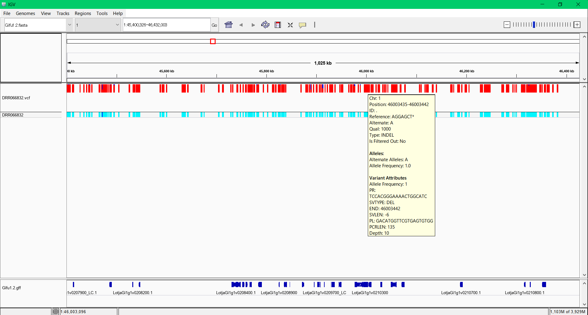

|  |
|
$ sudo apt update $ sudo apt install curl $ sudo apt install git $ sudo apt install sra-toolkit $ git clone https://github.com/akiomiyao/ped.git
$ cd ped $ git pull $ perl download.pl accession=DRR066832git pullで最新のスクリプトに更新されます。git pullは毎回行う必要はありませんが、プログラムが更新されている場合はpullしてください。
$ perl ped.pl target=DRR066832,ref=gifu1.2ミヤコグサの参照配列は設定済みなので自動的にダウンロードして解析用データを作成して一連の作業が自動的に進みます。